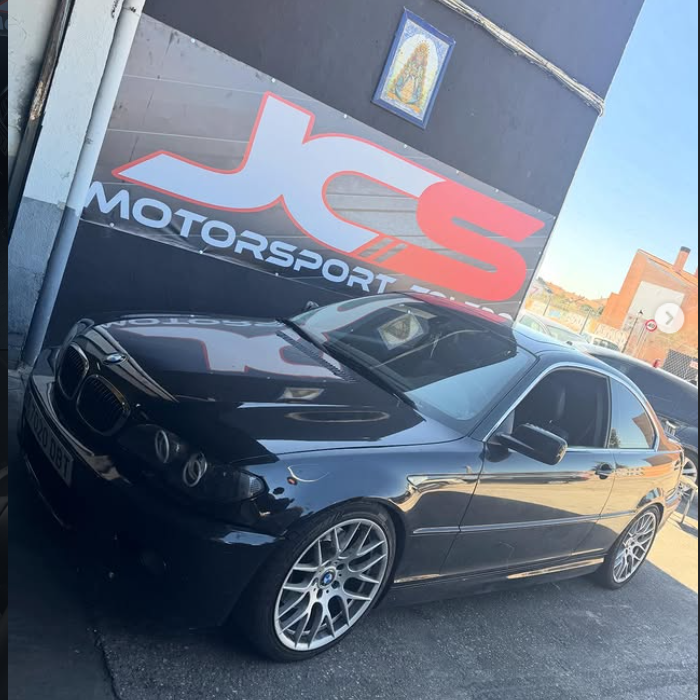
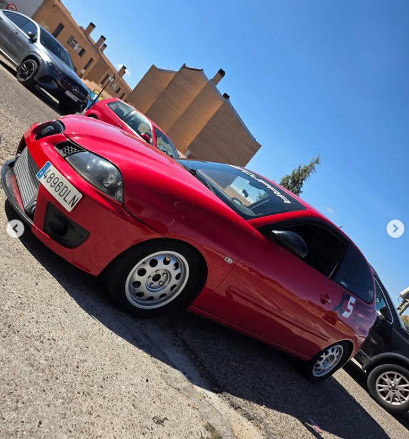
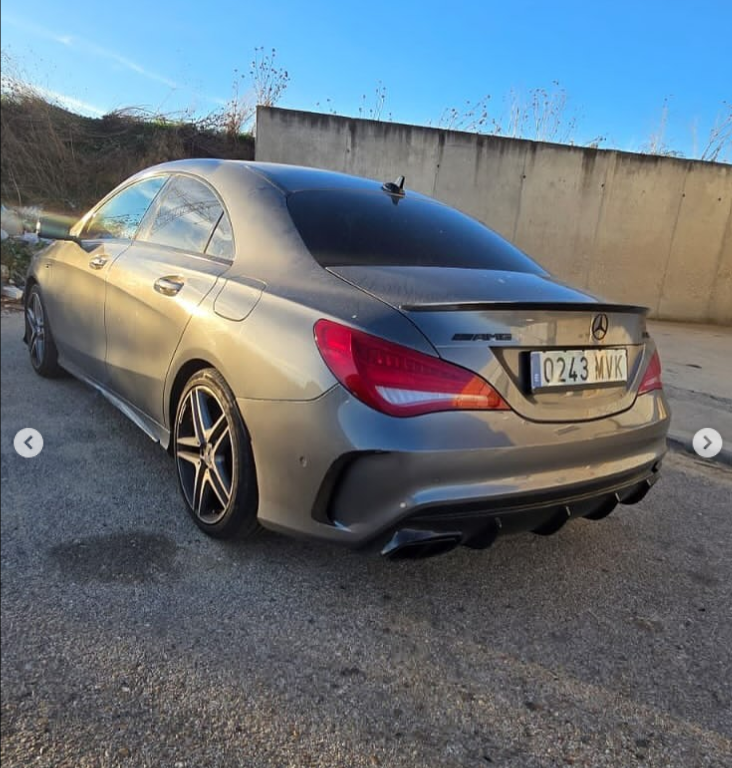
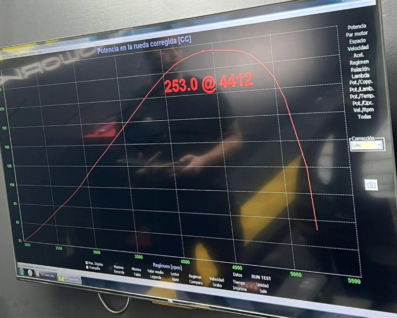
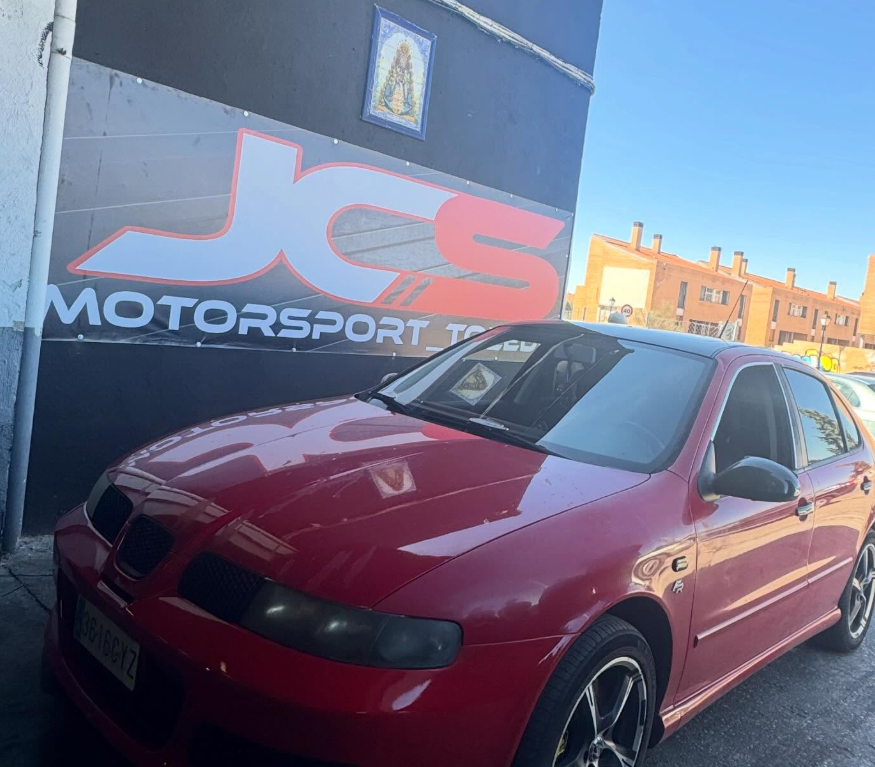
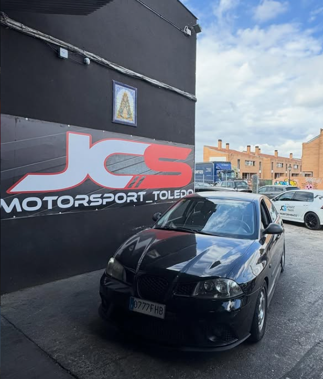
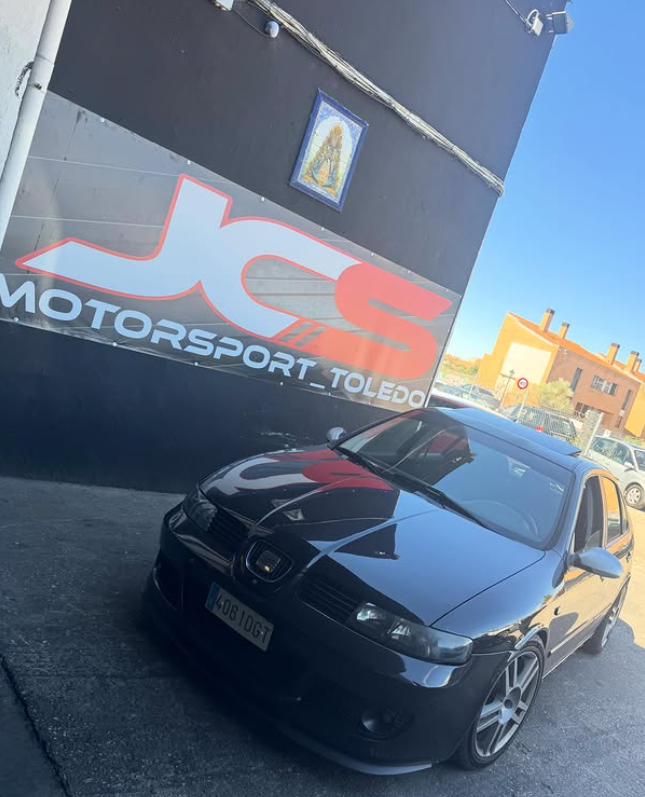
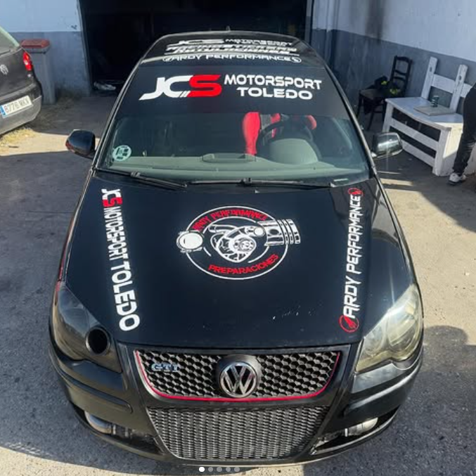
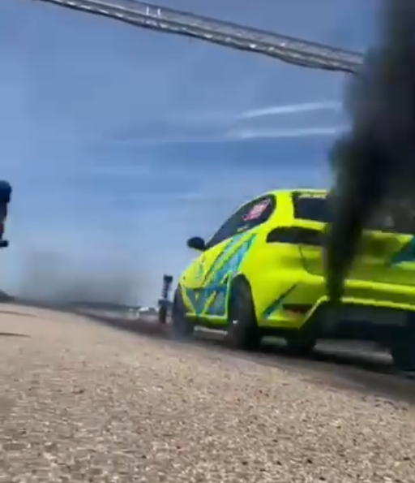

Un enfoque que se entiende rápido y da confianza desde la primera visita.
Preparaciones | Electrónica | 1.9 TDI
Preparaciones que entran por los ojos y responden como deben.
En Talleres Ardy Performance trabajamos electrónica a medida, diagnosis avanzada, mapas, multimapa y soluciones DTC, DPF y AdBlue para coches que buscan más presencia, mejor respuesta y una especialización muy clara en 1.9 TDI.
Soluciones pensadas con criterio para que el coche vaya fino y con sentido.
Proyectos que llaman la atención por cómo se ven y por cómo responden.
- Diagnosis avanzada para afinar el coche desde la base
- Mapas de consumo, multimapa y ajustes personalizados
- Preparaciones y material aftermarket enfocadas en 1.9 tdi

Preparaciones con presencia
Proyectos que transmiten marca, estilo y trabajo serio.

Preparación con actitud real
Servicios
Lo que más se busca en Ardy Performance.
Servicios pensados para quien quiere que el coche vaya fino, tenga más personalidad y reciba un trabajo serio de electrónica y preparación.
Electrónica a medida
Ajustes personalizados para sacar una respuesta más fina, más limpia y más acorde al proyecto.
Soluciones DTC, DPF y AdBlue
Intervenciones electrónicas resueltas con enfoque práctico y técnico, sin rodeos innecesarios.
Mapas de consumo
Calibraciones enfocadas en mejorar uso diario, eficiencia y tacto del coche.
Multimapa
Distintas configuraciones para adaptar el coche a lo que buscas en cada momento.
Diagnosis avanzada
Lectura, análisis y resolución con más claridad antes de cambiar piezas por cambiar.
Especialización 1.9 TDI
Un punto fuerte claro del taller para potenciaciones, afinación y proyectos con base sólida.
Nuestra forma de trabajar
No solo se trata de potenciar: se trata de que el coche tenga sentido.
El objetivo es que el coche quede mejor resuelto por dentro y por fuera: más fino, más claro, más atractivo visualmente y con una preparación que se sienta bien hecha.
Se trabaja para que el coche se sienta más lleno, más redondo y mejor ajustado.
Detalles, postura y presencia para que el resultado destaque desde la primera foto.
Ese conocimiento específico da confianza y hace que el mensaje del taller se entienda rápido.
Proyectos
Trabajos que ya venden el taller con solo verlos.
Una selección real para enseñar el estilo de Ardy Performance: presencia, limpieza, personalidad y coches que llaman la atención de verdad.



Banco de potencia
Resultados reales y proyectos recientes del taller.
Pruebas, mediciones y contenido del día a día para enseñar el trabajo de Ardy Performance con material real.
Medición en banco
Resultados visibles en cada ajuste.

Curva de potencia registrada durante la prueba del vehículo.
Run en banco
El momento de la prueba en vídeo.
Grabación de la misma sesión para acompañar la medición en banco.








Cómo se enfoca un proyecto
Más claridad al empezar, más sentido al terminar.
Se analiza
Qué pide el coche, qué busca el cliente y qué merece la pena tocar de verdad.
Se ajusta
Electrónica, mapas y enfoque técnico alineados con el resultado que se quiere conseguir.
Se entrega
Un coche con más personalidad, mejor tacto y una presencia mucho más redonda.
Contacto
Si quieres que tu coche llame más la atención y vaya mejor, aquí empieza el proyecto.
Puedes hablar directamente por teléfono o seguir viendo trabajos y proyectos por Instagram.
Teléfono directo: 641 41 32 32